Document / 文档档案
- 文档性质
- 前向设计文档：本策划案先于实现存在，目标是"从零把这个游戏做到可发售的程度"
- 文档用途
- 求职面试作品集、立项评审、外包与发行沟通的依据
- 项目状态
- 本策划案为执行前的设计基线：目标是按第 9 章里程碑、在第 16 周做到第 12 章第 12.1–12.6 节所列的 32 条完成度（可用一份可完整对局的垂直切片交付面试演示）
- 我承担的角色
- 主策划 + 系统设计 + 数值 + 技术方案 + 音频与表现方案 + 项目管理
- 阅读约定
- 「设计目标」= 立项时定下的指标；「实现值」= 后续实测；「提案」= 尚未实现的设计建议
SECTION 0关于这份文档：它为什么不是一份“点子集”
大多数策划案回答的是“这游戏多好玩”。这份文档回答的是“凭什么叫一个人也能做出来，并且卖得掉”——所以它有三条自我约束：
- 每个设计决定都要能被反驳并给出理由。 全文穿插 9 个「决策日志」框，记录我否决了什么、为什么否决、代价是什么。面试时我最怕的不是被问“为什么这么设计”，而是被问“你想过别的吗”。
- 每个数字都要能落地。 凡是给出数值的地方，都同时给出它的来源（配置项、公式、实测）与验收方式（怎么测、测出来算不算过）。
- 每一项“感觉”都要有工程化的表达。 比如“打击感”不是形容词，而是 50ms 的 hit-stop 加上 0.055 的屏震强度与 13 颗墨点；“紧张”不是氛围词，而是 tension = 0.65×血量压力 + 0.30×回合压力 + 0.05×倍率压力。
文档结构一览
第 1 章 立项 为什么是这个游戏，为什么是现在，为什么是我
第 2 章 核心体验 玩家在 15 分钟里经历什么（情绪曲线 / 四层循环 / 设计宪法）
第 3 章 规则系统 全部规则、数值、卡牌、AI —— 可直接实现的规格
第 4 章 节奏 单回合 25–30 秒是怎么算出来的
第 5 章 表现层 3D 演出、零 UI、音频三层结构
第 6 章 内容规划 10 张 → 24 张卡、对手与模式
第 7 章 技术方案 分层、确定性、性能预算、测试
第 8 章 美术与外包 风格锚点、资产清单、交付规范
第 9 章 开发计划 16 周 + 3 周缓冲、里程碑验收、迭代方法
第 10 章 商业化 定价、Demo、上线节奏、合规
第 11 章 风险与取舍 风险矩阵、止损点、已知未解问题
第 12 章 验收标准 把“做到这个程度”写成 32 条可测的 DoD
第 13 章 面试材料包 10 分钟讲解脚本、12 个高频追问
附录 A–H 数值 / 卡表 / 矩阵 / AI / 音效 / 术语 / 参考 / 版本记录
SECTION 1立项：为什么是这个游戏，为什么是现在
1.1三句话说清它是什么
一句话：一场和恶魔打的、把俄罗斯轮盘赌变成卡牌构筑的第一人称赌局。
一段话：你和一只戴十字架的黑羊隔着一张白色理石赌桌对坐。八槽弹巢里装着实弹与空弹，谁也不知道下一发是什么颜色；每回合你抽一张卡——能看穿子弹、能把伤害翻倍、能逼对手弃牌。你可以朝它开枪，也可以朝自己开枪：朝自己开空弹，你会多赚一张卡。血量只有四颗心，输光的人离桌。
一分钟：这是“俄罗斯轮盘赌”这一全民认知的赌局，被做成了有构筑深度的单人对决。相比同类，它做对了两件事：把全部状态做成桌上看得见摸得着的 3D 实体（没有血条、没有子弹数字、没有卡牌列表，全是模型），以及把“每一发都是赌注”变成数学（八槽弹巢的信息不对称 + 十张卡的信息交换）。一局 15 分钟，适合直播切片，也适合“再来一局”。
1.2机会：三个窗口同时打开
窗口一：品类刚被验证，但还没有定局。 俄罗斯轮盘赌玩法在《Buckshot Roulette》上被证明可以做到千万级销量（Steam 页 3.6 万条评测、95% 好评；公开报道的销量里程碑从 100 万一路到 1000 万级）。卡牌构筑在同一时期被《Balatro》证明（500 万+）。但这两条线始终没有被合到一起：一个没有构筑，一个没有赌桌。这是一个“已经被证明有需求、但类型尚未固化”的窗口——窗口不会一直开着，先做出可用切片的人拿到位置。
窗口二：差异化不在玩法，在“呈现方式”。 同类竞品全部活在 2D 界面里：Buckshot 是简笔画风的第一人称对枪，Balatro 是纯 UI 的牌桌，Liar's Bar 是粗糙的多人 3D 酒吧。没有人把“赌桌”本身做成唯一的界面——血量是桌上的心、子弹是弹巢里的壳、卡牌是桌面上的模型、倍率是头顶的火焰字。这条视觉路线可以独立成立，而且几乎无法被低成本复制（它要求的是演出工程能力，不是美术预算）。
窗口三：规模可控。 这个品类不需要开放世界、不需要配音、不需要 30 小时内容。一个人 + 24 件资产 + 4.5 个月可以做出能完整对局的垂直切片——这不是野心小，而是把“能做完”当成第一设计约束。一个做不完的 3A 点子，价值为零。
实体演出强（3D / 第一人称）
▲
Liar's Bar │ ★ 本作
（多人诈赌 · 粗糙） │ （单人 · 卡牌构筑 · 实体赌桌）
│
低随机 / 低赌博 ───────────────┼─────────────── 高随机 / 高赌博
│
Balatro │ Buckshot Roulette
（纯界面 · 构筑深） │ （简笔 3D · 纯对枪 · 无构筑）
▼
实体演出弱（2D / 界面）
上图是本作立项时的坐标判断：我们抢的是“右上角”这个空格——既要有实体演出的记忆点，也要有赌博的不确定性；同时用卡牌系统补上“深度”，用单人模式规避“需要在线人数”。
1.3目标玩家：谁会在 15 分钟里上瘾
画像 A：直播观众转玩家（占预期 50%）
在短视频里看过“对着自己脑袋开枪”的片段，觉得刺激但不想玩硬核 FPS。他们要的是低操作门槛 + 高戏剧性。对他们的承诺：全程只需要点三下（出牌选项、手枪目标），其余交给演出。
画像 B：卡牌构筑玩家（占预期 30%）
玩过《Balatro》《杀戮尖塔》，喜欢“算出来一套组合”的快感。对他们的承诺：十张卡之间能组出可解释的连招（见 3.7 的五组剧本），并且 AI 不作弊——赢了是你算得对。
画像 C：哥特/猎奇审美用户（占预期 20%）
为美术而来。对他们的承诺：墨色哥特 + 白理石 + 一只会嘲讽你的羊；所有状态都是实体，没有一块塑料 UI。
反向画像（明确不服务）：想要 30 小时剧情、想要联机开黑、想要每日任务与赛季通行证的人。为这些人做的每一个功能，都会稀释上面三件事。
1.4设计目标：三条可测量的判据
一个没有验收标准的目标等于没有目标。立项时我只给自己三条，并且每条都配了测法：
- 节奏：单回合 25–30 秒、单局 12–18 分钟。
测法：在 --fast 之外用真实演出跑 10 局，记录每回合起止时间戳，取中位数。超过 30 秒的回合必须能指出“多出来的是哪一段动画”。
- 可读性：零教学下，新玩家第一局能自己完成“开枪、出牌、换轮”三件事，且能在 3 分钟内说清“打自己为什么可能是好事”。
测法：找 5 个没看过项目的人，只给操作说明页，观察第一次失败发生在哪一步；若有人卡在“不知道现在该点哪里”，记为一次可读性失败。
- 可行性：一个人 + 外包，4.5 个月内做到“可完整对局、可导出 exe、可录 8 分钟 Demo”。
测法：里程碑 M4 结束时，用一台干净 Windows 机器跑通完整一局并录屏。
1.5反设计：六件我明确不做的事
设计文档最没用的部分是“我要做什么”（谁都会写），最有用的是“我不做什么”。以下六条在整个开发期都没有被推翻：
| 不做 | 理由 | 代价（我认） |
|---|---|---|
| 首发不做联机 | 联机会把“演出同步”变成主要工作量，而本作卖点是单人演出 | 少一批“朋友开黑”用户 |
| 不做长剧情 / 不做过场动画 | 叙事靠氛围与极少量文本（每张卡一句 flavor、黑羊的嘲讽台词） | 缺少“叙事溢价”，上限靠玩法撑 |
| 不做 2D 卡牌 UI 网格 | 一旦有 UI 面板，“桌面即 UI”的差异点立刻消失 | 卡面可读性成为长期问题（见 5.3） |
| 不做不可控的突然死亡 | 玩家可以输，但不能“没做错任何事就输” | 少了一点刺激，多了可复盘性 |
| 首发不做成就/云存档/排行榜 | 这些是“上线后 30 天”的事，不是“能不能上线”的事 | Steam 页面少几个卖点 |
| 首发 10 张卡而不是 24 张 | 10 张足以验证“卡牌 × 弹巢”是否成立；24 张是内容扩容阶段的事 | 首发内容量偏薄，靠定价与 Demo 弥补 |
SECTION 2核心体验：玩家在 15 分钟里经历什么
2.1玩家会怎么向朋友描述它
设计文档里最诚实的三句话，来自我预期的玩家语言：
- 「你朝自己开空枪，反而能多拿一张牌。」
- 「我明明能赢，但我点了继续加码，然后输光了。」
- 「那只羊会看着你笑，然后一枪把你打回标题页。」
第一句是机制钩子（反直觉但成立），第二句是情绪钩子（贪念被设计进去了），第三句是角色钩子（反派有存在感）。整个游戏的所有细节，都是为了让这三句话成立。
2.2情绪曲线：一局 15 分钟的五幕
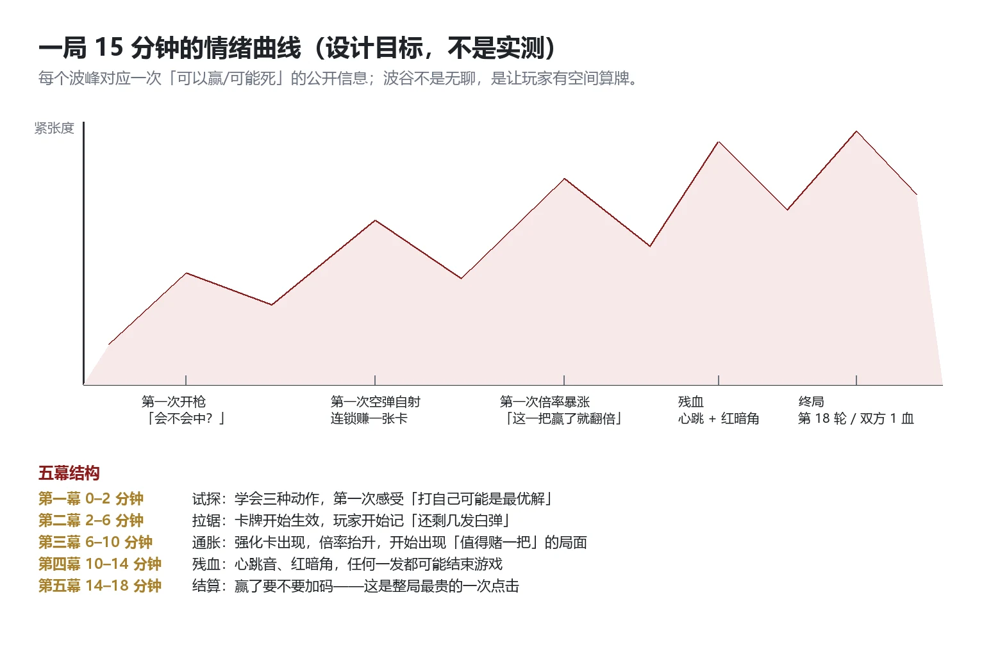
点击放大 ↗曲线的读法：
- 前 2 分钟必须出现第一次反直觉。玩家第一次学会“打自己可能是最优解”——这是整个游戏的教学，也是它最容易做成短视频片段的时刻。
- 6–10 分钟是通胀期。强化卡从 15% 概率开始出现，倍率被抬高，玩家第一次面临“这一把值不值得赌”。曲线在这里不追求最高，而追求“第一次有东西可失去”。
- 10–14 分钟残血期。心跳音、红暗角、音乐切到三全音——所有表现层手段集中在这里，因为这是玩家愿意再开一局的地方。
- 14–18 分钟是结算。“继续加码”是整局最贵的一次点击：它不结算、不记录、直接把倍率乘以 1.5–2.0 继续赌。
2.3四层嵌套循环：从一枪到一局
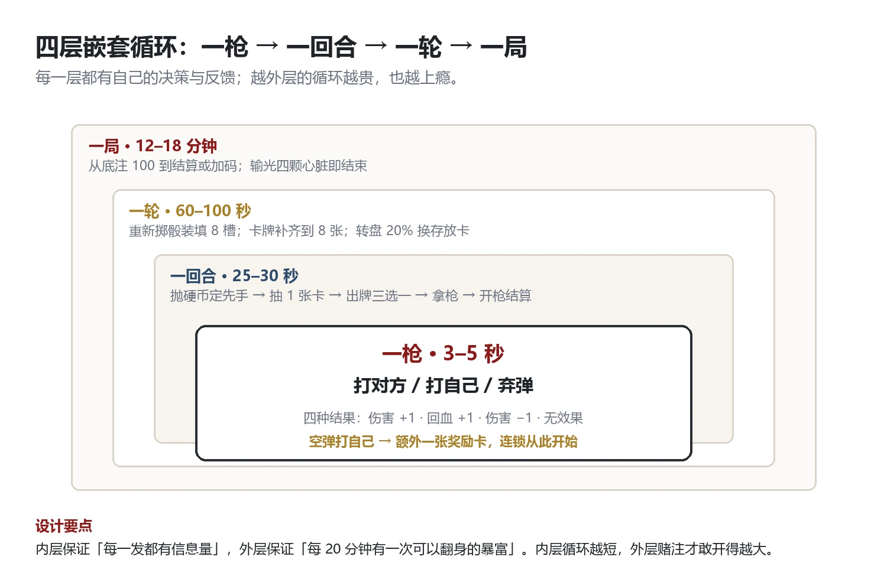
点击放大 ↗四层循环的关键不是“层数多”，而是每层的反馈周期都在人类可感的尺度上：
- 一枪 3–5 秒：按下扳机到结果，几乎即时。负责“爽”。
- 一回合 25–30 秒：两个决策点（出牌三选一、拿枪三选一）。负责“想”。
- 一轮 60–100 秒：重新掷骰装填、卡牌补齐、转盘可能偷走你的存放卡。负责“计划被打断”。
- 一局 12–18 分钟：从底注 100 到加码或结算。负责“再来一局”。
2.4三条设计支柱
P1 · 桌面即 UI（Desk is the UI）
屏幕上除了底部的操作提示与顶部的倍率火焰字，没有任何 HUD。血量是四颗心脏模型，子弹是八颗弹壳，卡牌是桌上的 3D 卡。玩家对游戏状态的每一次读取，都必须通过“看桌子”。 这条支柱决定了美术方向、相机高度、光照与所有演出设计。
P2 · 每一发都是赌注（Every shot is a bet）
不存在“安全回合”。即使你手里有看穿子弹的卡，也可能因为对手先手而失去先机。所有机制都在制造同一个问题：你现在愿意用多少确定性，去换多少上限？
P3 · 越赌越大（Bet bigger）
胜利不是终点，而是一个选择：结束游戏（结算）或继续加码（倍率继续滚）。这条支柱把单局游戏变成了一条“可以随时下车、但下车就结算”的赌注曲线——它在结构上复刻了赌博叙事的核心：你赢的从来不是钱，是继续赌的资格。
2.5设计宪法：八条不可妥协的原则
这八条写在项目根目录的规范里，任何新功能先过这八条：
- 能用模型表达的信息，不许用文字或图标。（例外：倍率火焰字、操作提示、操作日志）
- 任何随机都必须公开总量。 弹序可以随机，但白弹/黑弹总数双方都知道；强化可以随机，但概率写在 HUD 之外的设计文档里，且玩家能感知（“越往后越容易强化”）。
- 玩家的每一次失败都必须能复盘。 所以有操作日志：整局 108 条事件，逐条可回看。
- 不允许出现“无事可做”的回合。 即使无牌可用，弃弹也是一个决策。
- 同样的局面必须得到同样的结果。 规则层禁止随机分支，随机源可种子化——这让 831 条断言能在无头模式下跑完。
- AI 不许作弊。 它只能读公开信息（剩余白/黑弹数、血量、挂载、存放），不许读弹序。
- 所有数值只存在于一个配置文件里。 规则层不许出现魔法数字。
- 做不完的功能不进设计文档。 想做的先写进“提案”，等切片验证完再说。
2.6三个“哇时刻”（写给出市场素材的人）
| 时刻 | 触发条件 | 为什么值得剪进 15 秒短视频 |
|---|---|---|
| 自杀式连锁 | 打自己 + 空弹 → 补一张卡 → 再打自己 → 又是空弹 | 反直觉 + 连续三次运气 + 最后一张卡翻盘 |
| 倍率暴涨 | 强化强力子弹 + 白弹命中 → 顶部火焰字从 ×1 跳到 ×3 | 一个金色数字在头顶炸开，比血条更直观 |
| 残血反杀 | 双方 1 血，黑羊先手却抽到空弹，玩家一张神之一手重排弹序 | 观众知道“这一发就是命”，画面会静下来 |
这三个时刻是设计出来的，不是碰巧出现的：第一个来自空弹连锁机制（3.6），第二个来自强化与射击倍率（3.8、3.10），第三个来自信息类卡牌（3.7）与 AI 的不作弊原则。
SECTION 3规则系统：把“赌”写成可以实现的规格
这一章是可交付给程序的部分：术语、流程、数值、卡牌、AI。所有数字都可以直接抄进配置文件，所有判定都能写成断言。
3.1术语：三个容易混淆的时间单位
局 (Match) 一整场对决，从底注入池到结算或加码退出。约 12–18 分钟。
└ 轮 (Round) 一次装填到实弹全部打完/弃完。约 60–100 秒，通常 4 个回合。
└ 回合 (Turn) 抛硬币 → 抽卡 → 出牌 → 拿枪 → 开枪结算。约 25–30 秒。
└ 一发 (Shot) 一次扳机，3–5 秒的表演。
胜负：血量上限 4，下限 0。任一方血量归零，对方获胜。血量溢出无效（clamp 到 [0,4]），因此“满血时打自己治疗”是纯浪费——这本身就是一个可学的策略点。
3.2一回合的完整流程
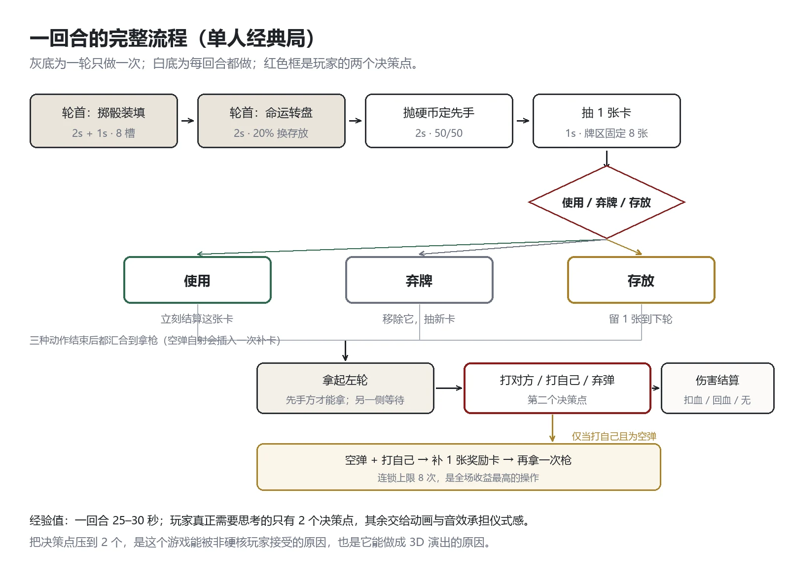
点击放大 ↗流程里有三个容易被忽略的细节，它们决定了玩家的体验：
- 轮首的三件事只做一次：掷骰装填（决定 8 槽的子弹构成）、命运转盘（20% 概率交换存放卡）、然后才是每回合都做的抛硬币定先手。
- 硬币每回合抛一次，50/50。它制造了“我刚算好，结果对手先手”的挫败感——这是刻意的，见决策日志 3。
- 空弹自射会插入一次额外的行动（补卡 → 出牌 → 再拿枪），这是唯一能突破“每回合 1 张卡”限制的机制。
3.3弹巢：把随机做成可读的信息结构
装填规则（全公开，写进教学）：
- 白骰决定白弹数量，黑骰决定黑弹数量；骰面是 2/3/4，各占两面（六面骰，均匀）。
- 实弹 = 白 + 黑（上限 8）；剩余槽位用空弹补满到 8。
- 弹序随机，双方都不可见；只有每色总数公开。
这带来一个精确的信息结构：
弹序（顺序） 各色总数 已打出数量 当前这一发
玩家（白羊） ✗ 不可见 ✓ 公开 ✓ 需要心算 ✗ / 用透镜后 ✓
黑羊（AI） ✗ 不可见 ✓ 公开 ✓ 需要心算 ✗ / 用透镜后 ✓
----------------------------------------------------------------------------------------
它逼玩家做什么 承担赌注 建立概率模型 记牌 为信息卡付钱
3.4伤害矩阵：四格规则解释一切
规则只有一句：每颗子弹治疗它的主人、伤害它的敌人。 展开就是四格：
打对方（黑羊） 打自己（白羊）
白弹（白羊色） → 黑羊 −1 白羊 +1
黑弹（黑羊色） → 黑羊 +1（被治疗） 白羊 −1
空弹 → 无效果 无效果 + 补 1 张奖励卡 + 继续行动
两个射手视角合计 8 种组合（QA 清单里的“8 种伤害组合”）。三条例外规则：
- 强力子弹把“非零效果”翻倍（基础 ×2、强化 ×3）；空弹仍是 0（0 不放大），弃弹不产生血量变化但会清空本方未用的强力子弹倍率。
- 一切增减 clamp 到 [0,4]，溢出无效。
- 射击倍率联动（第 18 轮加入）：玩家用白弹命中黑羊时，倍率按 ceil(×1.5) 滚动；回血类收益按 max(1, floor(×0.6)) 折算——倍率只奖励进攻，不奖励苟活。
3.5决策点一：出牌三选一
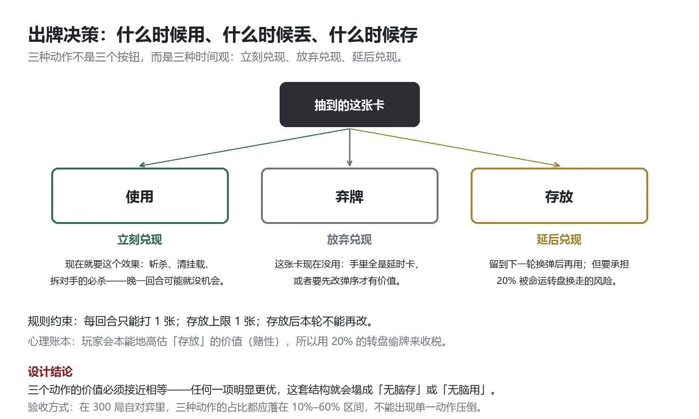
点击放大 ↗规则约束：每回合最多打 1 张；存放上限 1 张；存放后本轮不能再改。抽牌区固定 8 张，从 10 种卡里等概率独立抽取（可重复），所以同一张卡在一局里出现 3 次是正常的，不存在“牌库循环”的概念——这让玩家的记忆负担保持在“我手里有什么”，而不是“牌库里剩什么”。
3.6决策点二：拿枪（三选一）与空弹连锁
┌────────────── 打对方 ──→ 结算伤害/治疗 ──→ 回合结束
│
拿起左轮 ──────────┼────────────── 弃弹 ────→ 移除当前这一发（不计伤害）──→ 回合结束
│
└────────────── 打自己 ──┬─ 实弹 → 自己 −1（或 +1）──→ 回合结束
│
└─ 空弹 → 放回左轮 → 补 1 张奖励卡
→ 出牌三选一 → 再拿枪（上限 8 次）
空弹自射连锁是全游戏最重要的机制创新，因为它把“最坏的结果”变成了“最好的机会”：
- 空弹在别人身上是浪费，在自己身上是一张新卡 + 一次额外行动；
- 于是“打自己”从“自杀式操作”变成了“高风险高回报的信息下注”；
- 而它的风险完全来自 3.3 的概率结构：玩家必须自己算“还剩几发白弹”。
3.7十张卡：两两成组，五组剧本
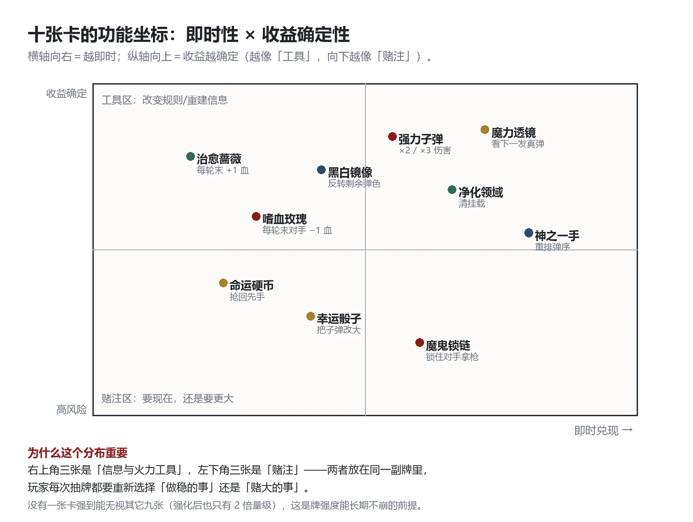
点击放大 ↗| # | 卡名 | 类型 | 基础效果 | 强化效果 | 定位 |
|---|---|---|---|---|---|
| 1 | 魔力透镜 | 消耗 | 看下一发子弹颜色 | 整轮可见下一发颜色 | 信息：把瞎猜变成算 |
| 2 | 强力子弹 | 消耗 | 下一发效果 ×2 | 下一发效果 ×3 | 爆发：配合已确认的利好弹＝斩杀 |
| 3 | 黑白镜像 | 消耗 | 置换当前黑白弹数量 | 敌方弹色变更为我方弹色 | 翻盘：抽走对手优势 |
| 4 | 治愈蔷薇 | 正挂载·持续 | 每轮结束自己 +1 | 每轮结束自己 +2 | 续航：长局核心资产 |
| 5 | 嗜血玫瑰 | 负挂载·持续 | 每轮结束敌方 −1 | 每轮结束敌方 −2 | 压血：与治愈镜像 |
| 6 | 幸运骰子 | 正挂载·延时 | 下轮利好色弹数 = 3（60%）或 4（40%） | 下轮利好色弹数必定 4 | 资源：提前锁定优势 |
| 7 | 命运硬币 | 正挂载·延时 | 下回合必定先手 | 本轮此后每回合必定先手 | 节奏：把随机先手变成确定 |
| 8 | 净化领域 | 消耗 | 清除全场所有挂载 | 清除自己负挂载 + 对手正挂载 | 解场：唯一能清治愈蔷薇 |
| 9 | 神之一手 | 消耗 | 自选前 1 发弹序 | 自选全部剩余弹序 | 作弊：直接改写命运 |
| 10 | 魔鬼锁链 | 负挂载·延时 | 对方下回合只能弃弹 | 对方本轮只能弃弹 | 控制：剥夺一次开枪 |
挂载的四条防叠加规则（任何新卡都必须遵守）：
- 同卡同效果不叠加；
- 强化覆盖基础，基础不能覆盖强化；
- 触发顺序 = 打出顺序的倒序（后手优先），再次打出同名卡刷新顺序；
- 持续挂载永久存在（只有净化能清），延时挂载到期消失。
五组“连招剧本”（写进新手引导与商店页文案的素材）：
- 看穿 + 斩杀：魔力透镜看到下一发是白弹 → 强力子弹 → 打黑羊，一枪 3 点。
- 自杀式连锁：先打自己一次已知空弹 → 拿奖励卡 → 抽到神之一手 → 重排弹序 → 打黑羊。
- 偷时间：命运硬币抢回先手 + 魔鬼锁链锁住对手下手 → 对手连续两个回合不能开枪。
- 无限续航：治愈蔷薇 + 净化领域（清掉对手的嗜血玫瑰），把对局拖到后期。
- 用钱砸死你：幸运骰子把下轮利好色锁到 4 发 + 黑白镜像把对手的弹色全变成自己的，然后连续三发打过去。
3.8强化：一条“越打越强”的曲线
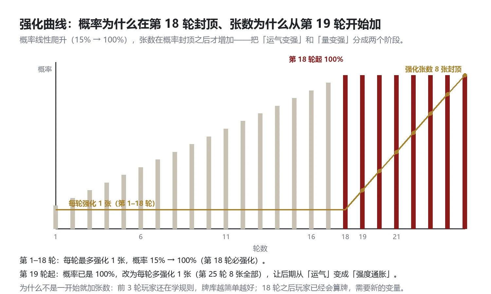
点击放大 ↗公式（可直接实现）：
第 r 轮强化概率 P(r) = min(1.0, 0.15 + 0.05 × (r − 1)) // 第 1 轮 15%，第 18 轮 100%
第 r 轮强化张数 N(r) = clamp(1 + max(0, r − 19 + 1), 1, 8) // 19 轮 2 张 … 25 轮 8 张
落点：单轮内互不重复；已强化的卡不重复叠加
跨轮：剩余卡不销毁，下轮补齐到 8 张，强化状态随卡保留（单调不减）
为什么把“概率”和“张数”分成两个阶段：概率阶段（1–18 轮）让玩家慢慢感受到“运气在变好”；张数阶段（19 轮+）让后期从“运气”变成“强度通胀”。如果一开始就同时加张数，前 3 轮的教学期会被强化卡淹没。
3.9存放与转盘：给“投资未来”收税
存放是“投资未来”的选项，代价是轮首 20% 的转盘可能把它换走：
转盘红区 20%
├─ 双方都有存放卡 → 互换
├─ 只有一方有 → 转移到对方（单侧也生效）
└─ 双方都没有 → 不触发（转盘只完成表演）
这条规则的存在意义不是“惩罚存牌”，而是让“存”这个动作有情绪：玩家在按下存放时会算一次概率，而这一次心算就是游戏的乐趣之一。
3.10经济：把“赢一局”变成“敢不敢继续赢”
底注 ante ∈ [80, 120] 每局开局掷一次，公开显示为火焰字
倍率 m₁ = 1
m_r = ceil(m_{r−1} × f), f ∈ {1.5, 1.6, 1.7, 1.8, 1.9, 2.0} // 第 2–18 轮
m_r = ceil(m_{r−1} × 1.5) // 第 19 轮起固定 1.5
结算额 = ±(ante × m_当前) 不夹取，可以是负数（输光）
“继续加码”是整局最贵的一次点击：胜利后选择加码，则本局不结算、不记录，直接进入下一轮，并继承底注、倍率、轮数、强化与牌库，血量回满。也就是说：
- 现在下车 → 拿走 ante × m；
- 继续赌 → 下一轮倍率再乘 1.5–2.0，但你有可能一分不剩。
这条规则让“胜利”不再是终点，而是新的一次下注。它也是整个游戏叙事的内在结构：你赢的从来不是钱，是继续赌的资格。
3.11AI：不作弊的对手，才是“对抗感”的来源
AI 的完整决策骨架（伪代码，可直接实现）：
view = 公开信息视图（血量、剩余白/黑弹、挂载、存放、轮数、倍率、是否先手、连锁状态）
禁止读取：当前这一发、未来弹序、对手手牌
对每个合法动作 a（出牌 × N、打对方、打自己、弃弹）:
score(a) = 骨架分(a) + EV 修正(a)
骨架分（决定下限，防止自杀式失误）:
1. 自己 hp ≤ 1 且必中 → 打对方
2. P(利好色) ≥ 0.50 → 打对方
3. 对手 hp ≤ 1 且 P(利好) ≥ 0.35 → 斩杀
4. 连锁成立（空弹自射期望为正）→ 打自己
5. 未满血且 P(利好) ≥ 0.35 → 打自己
6. 否则 → 弃弹
EV 修正：仅当期望优势 > ev_margin（2.0）时才允许偏离骨架
出牌：use_threshold / store_threshold / mount_per_round 等 30 个权重（附录 D）
三件事让这个 AI 值得被“尊重”：
- 不作弊：禁读弹序与手牌。玩家输给“聪明的对手”可以接受，输给“作弊的对手”会骂娘——这是口碑生死线。
- 确定性：无随机分支，同状态必得同决策，可复现、可测试。
- 快：预算 5ms，实测射击决策 p50 0.17ms / p99 0.19ms——为移动端与低端机留足余量。
SECTION 4节奏：25–30 秒一回合是怎么算出来的
节奏是独立游戏最容易被忽视、也最容易劝退玩家的东西。这一章把“感觉慢”翻译成时间账单。
4.1单回合的时间预算
0s ─────────────────────────────────────────────── 轮首（每轮只做一次）
装填：骰子旋转 2.0s + 子弹排列 1.0s + 卡牌排列 2.0s = 5.0s
命运转盘：转动 2.0s（红区 20% 才触发交换，另加 1.0s 交换） = 2.0s
抛硬币：旋转 2.0s = 2.0s
9s ─────────────────────────────────────────────── 每回合循环
抽 1 张卡 = 1.0s
出牌三选一：玩家思考（0–5s）+ 选中后动画 1.0s = 1–6s
拿枪 2.0s + 瞄准 2.0s + 静待 2.0s = 6.0s
开枪（0.3s）+ 结算静待 1.0s + 放回 2.0s = 3.3s
19–28s ─────────────────────────────────────────── 换手
一回合的有效区间是 19–28 秒，加上玩家思考时间落在 25–30 秒。这个数字不是估的，是逐段加出来的：如果想让它变成 20 秒，就必须砍掉某一段；如果能指出“多出来的是哪一段”，节奏就永远可控。
| 阶段 | 时长 | 可跳过 | 为什么必须是这个长度 |
|---|---|---|---|
| 骰子旋转 | 2.0s | 是 | 两个骰子要各转 4–5 圈才停，少于 1.5s 像“卡了一下” |
| 子弹排列 | 1.0s | 是 | 8 颗弹壳逐颗落位，玩家在这里第一次数“白几颗黑几颗” |
| 卡牌排列 | 2.0s | 是 | 8 张卡逐张翻面，留出“读卡”的窗口 |
| 命运转盘 | 2.0s | 是 | 必须让“红区”看起来快到了又滑走——它是情绪装置，不是信息装置 |
| 抛硬币 | 2.0s | 是 | 先手权是本作最重要的随机，必须给足仪式 |
| 抽卡 | 1.0s | 是 | 单张牌从牌区飞到出牌区 |
| 拿枪 / 瞄准 / 静待 | 2 + 2 + 2s | 部分 | 静待 2s 是刻意的“沉默”，让玩家在开枪前有一次后悔的机会 |
| 开枪 / 结算 / 放回 | 0.3 + 1.0 + 2.0s | 否 | 这一段是打击感本体，不能压 |
4.2单局的三幕结构
一局 12–18 分钟并不是匀速的。它的呼吸由“换轮”承担：
- 第一幕（1–3 轮，约 3–5 分钟）：玩家在学规则。此时的敌人不是黑羊，是“看不懂”。所有教学文案压缩在开局 3–5 行提示里，其余靠可读性设计（5.3）。
- 第二幕（4–12 轮，约 6–9 分钟）：真正的博弈期。强化卡开始出现（第 2 轮 20%、第 4 轮 30%），玩家开始有组合，开始计算“还剩几发”。
- 第三幕（13 轮以后）：强度通胀期。第 18 轮强化概率 100%，第 19 轮起每轮多强化一张。此时的对局已经不是“算概率”，而是“比谁先把对手打死”。
换轮的 5 秒是设计出来的呼吸：血条不会重置，但卡牌与弹巢重置。玩家在这 5 秒里做两件事：复盘上一轮哪里错了，以及决定要不要存牌。
4.3失败的成本核算
一局失败后玩家会做三件事之一：结束游戏（回标题）、再来一局、退出。这三条路径的时间成本决定留存：
| 路径 | 时间成本 | 设计处理 |
|---|---|---|
| 再来一局 | 1 次回车 + 重开动画 | 必须 < 3 秒进入第一轮装填，否则玩家会去刷手机 |
| 结束游戏 | 结算面板 2.72s + 回标题 0.25s 黑场 | 结算面板要“值得看”：底注、倍率、输赢额、总余额、轮数、回合数 |
| 继续加码（胜局） | 0 秒（不结算、直接下一轮） | 这是全游戏最便宜也最贵的一次点击 |
4.4内容时长：这个游戏“应该有多长”
这个问题在独立游戏里等价于“我该做多少内容才敢卖这个价”。我的答案是分层：
8 分钟 Demo = 1 个完整对局 + 1 段教学 + 1 个“哇时刻”（自杀式连锁）
3–5 小时（首发） = 10 张卡 × 单人经典局 × 随机性带来的重玩
12–20 小时（1.0） = 24 张卡 + 3 个对手 + 无尽加码模式 + 成就
SECTION 5表现层：这场赌局看起来、听起来、摸起来是什么样
表现层是本作真正的差异化。玩法可以被抄，演出很难。
5.1视觉基调：墨色哥特 + 白色理石
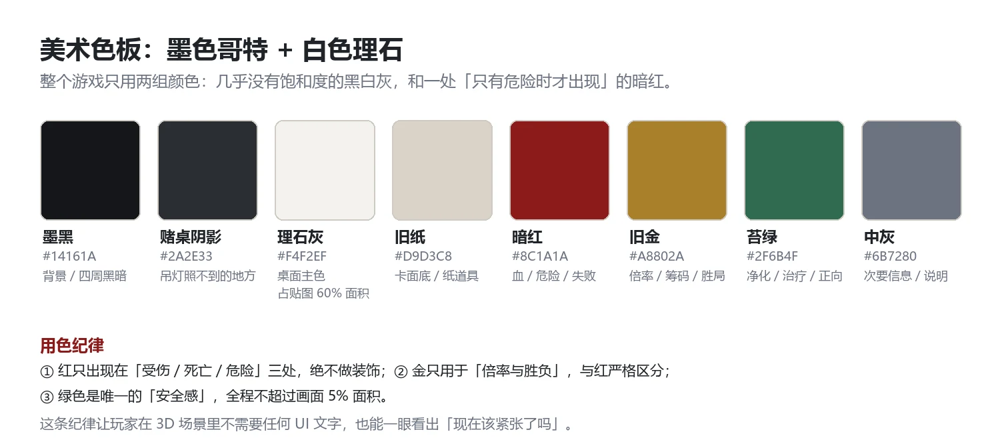
点击放大 ↗三条用色纪律（写进外包规范）：
- 红只出现在“受伤 / 死亡 / 危险”三处，绝不做装饰——所以玩家看到红色就知道自己快死了，不需要任何 UI。
- 金只用于“倍率与胜负”，与红严格区分。
- 绿是唯一的“安全感”，全程不超过画面 5% 面积（净化领域、治疗反馈）。
光照只有一盏主灯（吊灯，SpotLight3D），四周是纯黑。这不是省成本，而是把“桌面”从空间里切出来：玩家的注意力被物理地限制在桌子上。
5.2桌面即 UI：没有一个槽位是装饰
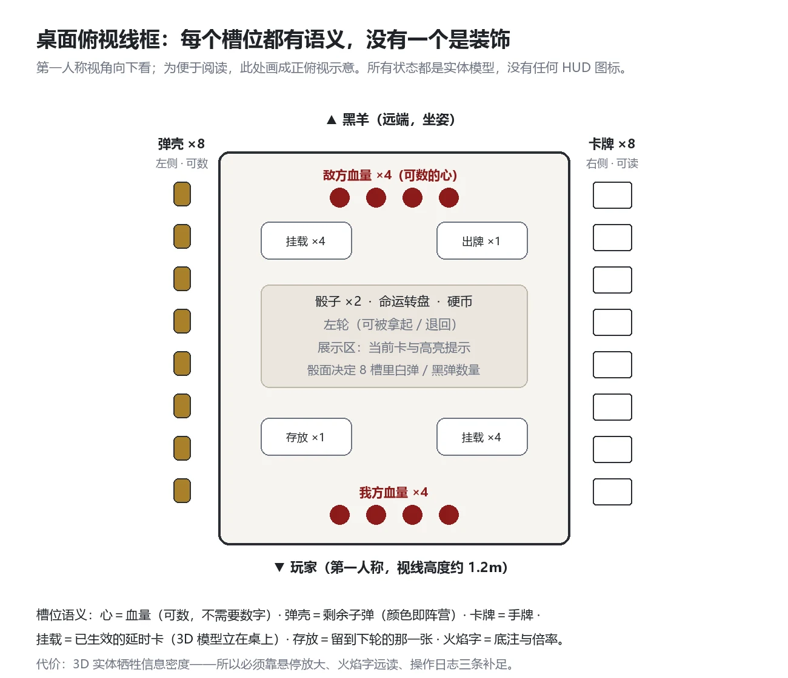
点击放大 ↗每个槽位都对应一条状态，没有“装饰性”位置：
| 槽位 | 承载的状态 | 读取方式 |
|---|---|---|
| 四颗心脏 | 血量 | 数个数（最多 4，不需要数字） |
| 左侧 8 颗弹壳 | 剩余子弹 | 看颜色（白＝玩家色，黑＝对手色） |
| 右侧 8 张卡 | 手牌 | 卡面 + 悬停放大 |
| 出牌区 | 本回合打出的卡 | 看模型 |
| 挂载区（4 格） | 已生效的延时/持续卡 | 看模型（能数出对手有几张） |
| 存放区 | 存放的那一张 | 看模型 |
| 中央骰子 ×2 | 本轮弹巢构成 | 看骰面 |
| 转盘 | 存放交换的随机装置 | 看红区 |
| 硬币 | 先手权 | 看正反 |
| 左轮 | 当前行动权 | 看它在谁手里 |
| 头顶火焰字 | 底注与倍率 | 远距离可读（1920 宽下仍可读） |
5.3可读性：三层兜底，以及一个诚实的失败
“零 UI”的代价是信息密度。这里记录了完整的补足过程，包括一个没解决好的问题：
第一层：把材质做到能读。 卡面是 2160×1630 的合图，特写镜头下大面积过曝（高光像素占 76.81%）。解法是给卡面单独做一档材质（各向异性 + albedo 压暗 20%），把过曝压到 3.61%——卡名在任何角度都能看清。
第二层：悬停放大。 鼠标悬停在卡上，卡片抬起并放大到可读尺寸（401 项探针验证通过）。
第三层：操作日志。 左侧 1/4 侧栏，把整局 108 条事件写成文字（“白羊使用【强力子弹】，下一发伤害 ×2”），给“零图标”兜底，同时是复盘工具与无障碍手段。
5.4镜头语言：五个关键时刻
相机是这场戏的“摄影指导”。全游戏只有五种镜头行为：
| 时刻 | 镜头行为 | 目的 |
|---|---|---|
| 开枪 | 后坐：位置后移 0.03m + pitch +2° + FOV 70→68，0.28s | 让“开枪”有重量 |
| 命中 | 轻抖 0.12s + FOV −1.5 | 确认“打中了” |
| 击杀 | 推近 0.06m + FOV −3° + 慢镜 0.25×、持续 0.12s | 给结局一个句号 |
| 受击 | 50ms hit-stop（时间缩放 0.05×） | 帧停顿是最廉价也最强的打击感 |
| 转场 | 黑场过渡 0.25s | 轮与轮之间的呼吸 |
5.5打击感的三件套与“50 毫秒”
所有打击感都由同一个配方组成，只是参数不同：
命中 = 屏幕震动（0.055 / 0.22s）
+ 模型抖动（0.05 / 0.25s）
+ 屏幕红闪（alpha 0.30 / 0.30s）
+ 声音（hit 音效 + 心跳短暂抬升）
+ 50ms hit-stop（时间缩放 0.05×）
为什么 hit-stop 是 50ms 而不是 100ms：100ms 会被感知为“卡顿”，50ms 会被感知为“重量”。这是动作游戏里的经验值，在回合制里同样成立——它是唯一能让“回合制”产生“手感”的手段。
另外两个刻意的选择：
- 飞溅物是墨点而不是血（13 颗、0.4s）：既保留冲击力，又把血腥度压到可过审的范围（合规见 10.4）；
- 血量是碎裂而不是消失：模型先放大 1.35 倍，旋转 90°，再缩没（0.35s）——比“淡出”更有“被夺走”的感觉。
5.6情绪化灯光：让屋子替你紧张
| 状态 | 表现 |
|---|---|
| HP = 2 | 环境光轻微偏红（(0.85,0.30,0.28) / 0.45） |
| HP = 1 | 叠加红色暗角（0.34↔0.55 呼吸，0.9s）+ 主灯偏红 + 红警示点光 + 心跳循环 −18dB |
| 第 18 轮或双方 ≤1 血 | 音乐切 final 层（三全音 drone，100BPM）；三全音＝音乐里的“不协和”，听觉上直接不安 |
| 击杀瞬间 | 主灯 0.8s 降到 30% + 1.2s 红脉冲；对手模型后仰 −6°、Y 轴压缩 0.98（0.25s） |
| 结算 | 环境光按胜负染色（胜＝绿，负＝红） |
5.7音频：三层总线 + 五层素材 + 三个情绪状态
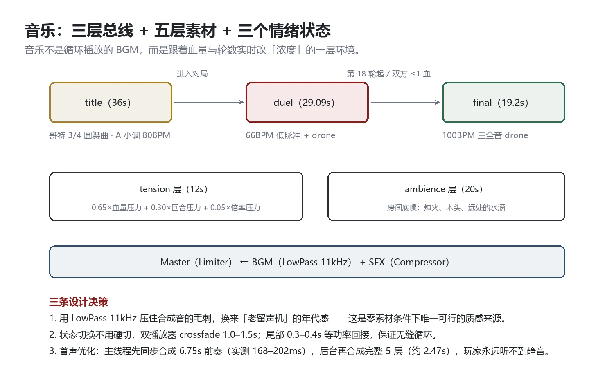
点击放大 ↗音频是这个小团队最“重”的一块工程：约 40 条合成音效 + 9 段真实录音 + 5 层程序合成音乐，全部在运行时生成，零外部音频素材（体积 303KB）。
音效清单（30 条主清单 / 六类，可外包可合成）：
| 类别 | 条目 | 设计要点 |
|---|---|---|
| 骰子（3） | dice / dice_roll / dice_land | 落地必须“闷”，因为桌上铺着布 |
| 卡牌（5） | card_draw / card_flip / card_use / card_discard / card_store | 五种动作五种纸声，玩家闭眼能分辨 |
| 转盘·硬币（6） | spin / wheel_spin / wheel_stop / coin / coin_flip / coin_land | 停顿感来自 wheel_stop 的金属余弦 |
| 左轮·枪声（6） | revolver_take / revolver_spin / hammer / gun / shot / dry | 空弹“干响”必须与实弹明显不同 |
| 命中·状态（6） | hit / hurt / heal / mount / purify / heartbeat | 心跳 −18dB 循环，血量越低越快 |
| 界面·胜负（4） | click / buy / win / lose | win 用铜管，lose 用低频下坠 |
三条音频设计决策：
- 用 LowPass 11kHz 压住合成音的毛刺，换来“老留声机”的年代感——这是零素材条件下唯一可行的质感来源。
- 状态切换不用硬切：双播放器 crossfade 1.0–1.5s，尾部 0.3–0.4s 等功率回接，保证无缝循环。
- 首声优化：主线程先同步合成 6.75s 前奏（实测 168–202ms），后台再合成完整 5 层（约 2.47s）——玩家永远听不到静音。
5.8首因：391 毫秒进入对局
独立游戏最容易被忽略的流失点是“点击开始到第一帧”。
标题页后台预热（延迟 300ms 启动）
├─ 预加载 2 个场景（PackedScene）
└─ 预加载 24 个 GLB 模型
点击开始 → 场景 ready：1894.3ms → 391.3ms（≈5×）
最长单帧间隔（max gap）：1463.4ms → 305.3ms
模型缓存：0/24 → 24/24
SECTION 6内容规划：10 张卡是验证，24 张才是商品
6.1首发内容包与它的边界
首发（1.0）计划交付的内容量，与“验证用切片”是两件不同的事：
切片（本策划案要做的） 1.0（商业化目标）
├─ 10 张卡 ├─ 24 张卡（+14）
├─ 1 个对手（黑羊） ├─ 3 个对手（+2）
├─ 1 个模式（单人经典） ├─ 3 个模式（+无尽加码 +每日挑战）
├─ 1 张赌桌 ├─ 3 张赌桌（主题差异，非玩法差异）
└─ 3–5 小时重玩时长 └─ 12–20 小时
切片的目的是证明“卡牌 × 弹巢”这个组合成立，而不是“内容好看”。所以 10 张卡不是“暂时不够”，是刻意设计成最小可验证集：3 张信息类、3 张火力类、2 张续航类、2 张节奏类——每一类都能单独形成策略。
6.2卡池扩展方法论：新卡必须带来新的“故事”
24 张卡不是把 10 张复制一遍。每张新卡必须通过四条准入：
- 它必须与至少 2 张现有卡形成新连招（例：“偷牌” + “存放” ＝ 偷走对手存的关键卡）。
- 它必须属于四种角色之一，不允许“另一种伤害”：
- 信息类：改变“知道什么”（透镜、镜像、神之一手）
- 火力类：改变“这一发值多少”（强力子弹、嗜血玫瑰）
- 续航类：改变“能撑多久”（治愈蔷薇、净化领域）
- 节奏类：改变“谁先手、能不能动”（命运硬币、魔鬼锁链、幸运骰子）
- 它不能破坏 4 点血的血量尺度（单卡最大单发收益 ≤ 2 点）。
- 它必须能被一句话讲清（“看了下一发” / “抢回先手” / “把伤害翻倍”）——讲不清的卡不上。
单卡成本核算（做预算用，这个数字比“设计”更决定内容量）：
| 环节 | 成本 | 说明 |
|---|---|---|
| 3D 模型 | 0.5 人日 | 卡牌本体只有 124 面（薄板 + 圆角），真正的成本在卡面贴图 |
| 卡面美术 | 1.5 人日 / 张 | 2160×1630 合图，外包单价约 ¥600–1500 |
| 规则实现 | 1 人日 | 消耗型简单，挂载型要处理叠加/倒序/净化 |
| 测试与探针 | 1.5 人日 | 每张卡至少 8 条断言（基础 4 + 强化 4） |
| 合计 | 约 4.5 人日 / 张 | 14 张新卡 ≈ 63 人日（含外包） |
6.3对手设计：黑羊之后的三张脸
对手不是难度旋钮，而是规则变体。三个提案（未实现，1.0 内容）：
对手 A：庄家（The Dealer） —— 变体维度：信息
他不参与对局，只在每轮结束后“抽成”：从双方的结算额里各取 10%。他的存在让“继续加码”变得危险——因为庄家永远赢。台词极少，只在你加码时抬头看你一眼。
对手 B：镜羊（The Mirror） —— 变体维度：规则
它复制你上一轮打过的卡（在你的强化之前），所以你必须故意打烂牌来喂它。它把“出牌”这个决策从“现在最优”变成“现在最优 + 未来被抄”。
对手 C：债主（The Creditor） —— 变体维度：节奏
开局你欠它 2000。每轮你都要还钱，还不上就用血量抵。它逼你快攻，与“续航流”天然冲突。它是唯一一个“你打得慢就会输”的对手。
这三个对手的共同设计原则：改变一条规则，不改数值。加数值（血量 6、伤害 2）只会让玩家觉得“难”，改规则才会让玩家觉得“新”。
6.4模式：三种“再来一局”的理由
| 模式 | 玩家动机 | 实现成本 | 备注 |
|---|---|---|---|
| 单人经典 | 赢一局、解锁、看结局 | 已有 | 首发主力 |
| 无尽加码 | “我能滚到多少倍” | 低（复用加码逻辑） | 排行榜的天然载体 |
| 每日挑战 | 每天同一副牌，比分数 | 中（需要固定种子 + 云端分数） | 长线运营的核心 |
| 多人（提案） | 朋友开黑 | 高（演出同步、座位、回合时序） | 1.0 之后评估，不在首发范围 |
SECTION 7技术方案：规则层不知道镜头存在
7.1为什么是 Godot 4
| 选项 | 为什么没选 |
|---|---|
| Unity | 生态最好，但对单人项目而言包体、许可与商业条款的心智负担更重；包体也压不到 200MB 以内 |
| Unreal | 渲染天花板最高，但“一个人做 3D 赌桌”用不到它的能力，反而被它的工作流拖慢 |
| 自研 / Web | 3D 演出与音频合成都要重造轮子 |
| Godot 4 | 3D 够用、GDScript 迭代极快、导出单文件 exe 约 174MB、无授权费用、音频合成 API 完整 |
另外一个隐性理由：Godot 的 3D 能力“刚好不够用”——它逼我把美术做成低多边形 + 强光照的风格化，而不是追求写实。这是美术方向与引擎能力的一次对齐。
为什么是 3D 而不是 2D：2D 做不出“实体赌桌”。本作的差异点是“看桌子而不是看 UI”，2D 只能做成界面，方向就没了。3D 的代价是性能与美术成本，但换来了唯一的记忆点。
7.2分层：一条单向依赖
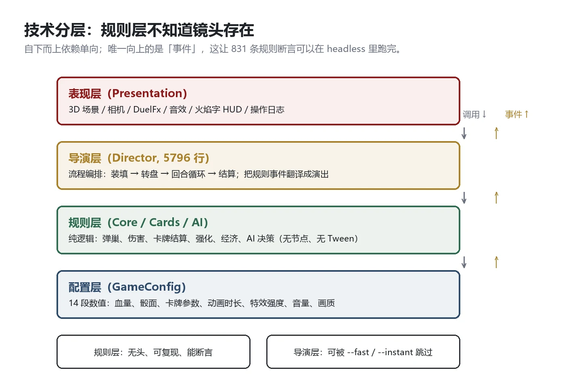
点击放大 ↗四层的职责边界（违反任何一条都会让测试崩掉）：
- 配置层：GameConfig，14 段数值。规则层不许出现魔法数字。
- 规则层：弹巢、伤害、卡牌结算、强化、经济、AI。纯逻辑，无节点依赖、无 Tween、无引擎单例——因此可以在 headless 下跑完 831 条断言。
- 导演层：把规则事件翻译成演出（装填 → 转盘 → 回合循环 → 结算）。约 5800 行，是全项目最大的单文件，也是唯一“允许知道镜头”的层。
- 表现层：3D 场景、相机、DuelFx、音效、火焰字 HUD、操作日志。
7.3数值全配置化：14 段
SCENES 场景路径
CARDS 10 张卡的 id / 模型 / 类型
duel 血量上限、弹巢槽数、空弹伤害、弹序是否隐藏
dice 骰面数、取值 [2,3,4]、每值面数、白骰/黑骰映射
economy 底注范围、倍率下限/上限、衰减系数
cards 牌区容量、每回合抽牌、存放上限、转盘概率、强化曲线
card_params 10 张卡的基础值 + 强化覆盖值
effects 强力子弹 ×2/×3、clamp 边界、是否可叠加、是否倒序触发
ai 预算、仅公开信息、默认权重
anim 13 段动画时长（骰子/卡牌/转盘/硬币/拿枪/瞄准/静待/放回…）
audio 三总线音量 dB、日志开关
fx 屏震/枪口/红闪/抖动/脉冲/碎裂/低血阈值与强度
cinematic 后坐/俯仰/FOV/慢镜/hit-stop/墨点/白闪/转场
dev debug HUD、日志冗长度
7.4确定性：让“复现一局”成为可能
三个条件凑齐，才能复现任意一局：
- 单一随机源：规则层只有一个 _rng，经济层另有独立的 _econ_rng（种子 = 局号 × 7919 + 基础种子）。
- 无引擎随机：不用 randf()、不用物理、不用帧时间决定结果。
- 事件日志：每个规则动作产出一条结构化事件，可回放、可断言。
{“turn”: 3, “actor”: “player”, “type”: “shot”, “target”: “self”,
“shell”: “blank”, “delta_hp”: 0, “chain_open”: true,
“bonus_card”: “shenzhi_basic”, “rng_state”: 20251031}
这套设计带来的实际收益：QA 可以拿着一条日志复现 bug；AI 可以 300 局自对弈跑回归；平衡改动可以对比“同种子下改前改后”的胜负曲线。
7.5性能预算：先定天花板，再花
目标：1280×720 下 60 FPS，且留 3 倍余量（为了低端机与集显）。实际分配：
| 项 | 预算 | 说明 |
|---|---|---|
| 渲染 | 8 ms | 24 个 GLB、307K 三角面、1 盏实时阴影灯 |
| 表现层逻辑 | 2 ms | 相机、DuelFx、火焰字、日志 |
| 规则 + AI | <1 ms | AI 决策 p99 0.19ms，规则结算 <0.1ms |
| 音频合成 | 首帧 250ms（一次性） | 之后零开销（AudioStreamWAV 预合成） |
| 显存 | < 500 MiB | 卡面纹理压缩后 22.4 MiB（原 134.3 MiB） |
三条性能纪律：
- 卡面走压缩：10 张 2160×1630 卡面从 134.3 MiB 压到 22.4 MiB（−83%），PSNR 31.18dB、相关系数 0.996——肉眼看不出差别。
- 场景预热：标题页后台预加载（见 5.8），把 1.9 秒的卡顿藏进“玩家还在看标题”的时间里。
- 画质三档必须与基线逐项一致：medium 档是验收基线，禁止为了跑分改断言（quality_manager.gd 里有显式检查）。
7.6测试策略：三层，越往下越便宜
规则层（最便宜） 831 条断言 · headless 秒级 · 每次提交必跑
├─ 伤害矩阵 8 组、clamp、强化覆盖、挂载倒序、连锁上限
├─ 经济：倍率公式、结算不夹取、加码不记录
└─ AI：不作弊（读私有字段即失败）、300 局自对弈 0 非法
表现层（中等） 62 个探针目录 · 截图统计像素 · 每条 <10s
├─ 布局：8 弹壳 / 8 卡 / 4 心 / 4 挂载位
├─ 演出：火焰字可读、悬停放大、镜头参数落位
└─ VFX：屏震、墨点、低血暗角（对比像素差）
工程（最贵） 端到端：源码与出厂件一致、模型 24/24 加载、0 ERROR
三条让测试真的有用的经验：
- 断言要写在规则层，不要写在场景里（否则每次改 UI 都要改测试）；
- 探针是“截图 + 统计”，不是“人工看图”（117 项可访问性探针一次性跑完，比人眼快且不会疲劳）；
- 允许“已知红项”存在，但必须登记——未登记的失败视为红灯。
7.7构建与分发
导出预设：Windows Desktop（x86_64）
输出：build/SheepieFairyTale.exe（174.4 MB，内嵌 PCK）
exclude：screenshots / tests / tools / docs / plan / *.md / *.log
包体：252.1 MB → 174.4 MB（-31%）
发布前需要补的三件事（见第 9 章 M5）：Steamworks SDK（成就/云存档/排行榜）、崩溃上报（Sentry 或自建，需隐私政策）、安装包（ZIP 或 Inno Setup；Steam 可不用）。
SECTION 8美术：一个人怎么做出“像样”的 3D 赌桌
8.1风格锚点：三个词
如果一个外包美术只记住三个词，我要他记住这三个：
墨 · M O R T A R —— 背景近乎纯黑，只有桌子被照亮
理石 · M A R B L E —— 桌面是高反光的白理石，带手绘版画纹路
烛光 · C A N D L E —— 暖色点光，有呼吸（±5% 三正弦抖动）
为什么是“墨”而不是“血”：血腥会触发分级问题（10.4），而“墨”在哥特语境里同样阴森，还多了“手绘版画”的年代感。飞溅物、碎心、净化粒子全部走墨与晶体的语言。
为什么必须是“白理石桌 + 黑背景”：这是整个游戏唯一的“广告画面”。玩家在任何截图里都能一眼认出它——高对比、中心构图、暗角。美术的第一职责是让截图自己会传播。
8.2资产清单与面数预算
全项目 24 件 GLB、约 30.7 万三角面、约 100 MB。分配原则：玩家的眼睛在哪，面数就在哪。
| 资产 | 面数 | 说明 |
|---|---|---|
| 黑羊（对手） | 23,869 | 唯一的“角色”，也是唯一需要表情的模型 |
| 白羊（玩家第一人称的手/枪） | 17,547 | 只在开枪与持枪时入画 |
| 骰子 ×2 | 各 54,320 | 全场最贵的资产——因为它会被镜头怼近 |
| 命运转盘 | 50,147 | 转盘要“看起来能转”，需要细节 |
| 吊灯 | 49,986 | 它是唯一的光源，细节决定氛围 |
| 赌桌 | 12,386 | 大面积，靠贴图而非模型 |
| 左轮 | 10,523 | 会被拿起来怼到镜头前 |
| 硬币 | 10,462 | 抛硬币特写 |
| 血量（心） | 16,334 | 4 个实例共享一份 |
| 卡牌 ×10 | 各 124 | 薄板 + 圆角，厚度 2mm |
8.3卡面规格书（外包的第一份文件）
| 项 | 规格 | 原因 |
|---|---|---|
| 尺寸 | 2160×1630 合图（左半 1080 为正面，右半为背面） | 一张图解决正反面，减少 draw call |
| 物理尺寸 | 0.163 × 0.002 × 0.108 m（厚 2mm） | 与桌面其他道具比例一致 |
| 出血/安全区 | 四周留 40px 安全边 | 圆角切边不切字 |
| 卡名位置 | 上部 1/4 区域，最小字号在 1920 下 ≥14px | 悬停放大后可读 |
| 过曝控制 | 高光像素占比 <5% | 特写镜头下不能“白成一片” |
| 材质档 | card_clear：各向异性 + albedo 压暗 20% | 把过曝从 76.8% 压到 3.6% |
| 命名 | card_<id>_face.png / card_<id>_back.png | 便于批量导入 |
| 交付 | PNG-24、sRGB、无 alpha（除圆角） | Godot 导入参数固定 |
8.4外包交付规范（十条，直接发给外包）
- 风格参考图 3 张（本作实机截图 2 张 + 同类参考 1 张），不接受“自由发挥”。
- 所有模型不带骨骼动画（本作演出全部由代码 Tween 驱动），只交付静态网格。
- 单位统一：1 单位 = 1 米；模型原点在接地中心。
- 面数上限见 8.2；超预算需提前说明理由。
- 贴图统一 2048×2048 以内、PBR 四通道（albedo / normal / roughness / metallic）。
- 禁止使用引擎特有着色器节点，只交基础 PBR。
- 命名规范：<类别>_<名称>.glb（例：card_moli.glb）。
- 交付前自检：在 1280×720、单盏聚光灯下渲染一张截图，确认可读。
- 分两批交付：第一批 3 件（用于风格确认），确认后交剩余。
- 修改轮次：每件最多 2 轮修改，超出按小时计费。
8.5美术预算（估算）
| 项 | 数量 | 单价（元） | 小计（元） |
|---|---|---|---|
| 卡面插画 | 24 张 | 800–1500 | 19,200–36,000 |
| 角色模型（黑羊/白羊） | 2 | 2,000–4,000 | 4,000–8,000 |
| 道具模型（骰子/转盘/左轮/心…） | 12 | 300–800 | 3,600–9,600 |
| 场景（赌桌/吊灯/环境） | 3 | 1,500–3,000 | 4,500–9,000 |
| UI/字体/图标（几乎为零，仅标题字） | — | — | 500–1,500 |
| 合计 | 约 3.2 万–6.4 万元 |
这个数字是全项目最大的一笔现金支出，也是“卡面能不能读”这件事的定价。
SECTION 9开发计划：16 周 + 3 周缓冲
9.1里程碑
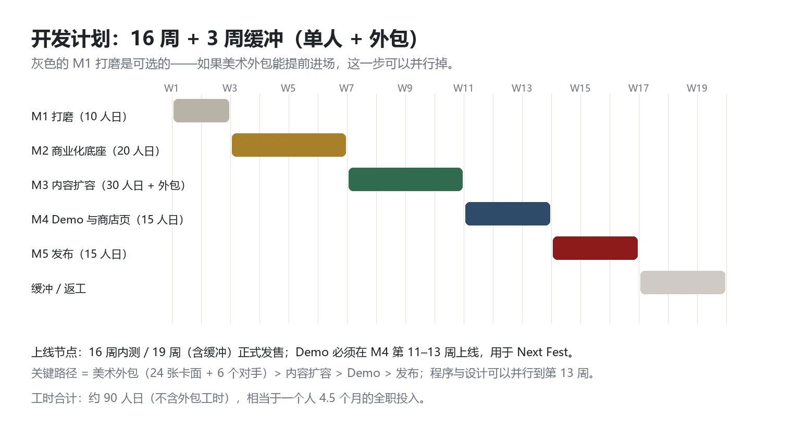
点击放大 ↗| 里程碑 | 周期 | 投入 | 交付物 | 验收标准（可测） |
|---|---|---|---|---|
| M1 打磨 | 第 1–2 周 | 10 人日 | 可完整对局的垂直切片 | 从标题到结算全流程无阻断；单局可玩完 |
| M2 商业化底座 | 第 3–6 周 | 20 人日 | 设置/暂停/存档/无障碍/性能达标 | 12 项设置项全部生效；720p ≥60FPS；进对局 ≤2s |
| M3 内容扩容 | 第 7–10 周 | 30 人日 + 外包 | 24 张卡、3 对手、2 模式 | 每张新卡 8 条断言通过；300 局自对弈 0 非法 |
| M4 Demo 与商店页 | 第 11–13 周 | 15 人日 + 外包 | Steam 商店页、8 分钟 Demo、预告片 | Demo 可独立安装运行；商店页素材齐全 |
| M5 发布 | 第 14–16 周 | 15 人日 | 正式版、成就、云存档、发布公告 | 端到端验收通过；崩溃率 <1%；退款率可监控 |
| 缓冲/返工 | 第 17–19 周 | — | — | 用于吸收外包延期与发布后热修 |
9.2关键路径与它的两个陷阱
关键路径：美术外包（24 卡面 + 6 对手模型）
→ 内容扩容（M3）
→ Demo 与商店页（M4）
→ 发布（M5）
陷阱一：外包是唯一不可压缩的环节。 程序与设计可以并行到第 13 周，但外包只要晚两周，M4 就晚了。对策：M1 就把第一批 3 件送出去做风格确认，把外包的启动时间提前到最早。
陷阱二：Demo 不是“截一段正式版”。 Demo 要单独设计（10.5），它有自己的取舍：给 10 张卡还是 6 张？给不给结局？——这些决策必须在 M4 之前定稿，否则会反复改。
9.3团队与分工
最小可行配置（本策划案的假设）：
| 角色 | 人数 | 职责 | 备注 |
|---|---|---|---|
| 策划 / 程序 / 音频 / 演出 | 1 | 全部系统设计、GDScript、程序合成音频、镜头演出 | 本策划案作者 |
| 美术外包 | 1–2 | 卡面、角色、场景道具 | 按件计费，分两批 |
| 测试 | 0（自测）+ 社区 | 规则探针、公开测试 | 探针脚本替代人工 |
| 发行 | 0（自发行）或 1 | 商店页、宣发、KOL | 见 10.4 |
9.4流程纪律（一个人也要有流程）
- 一周一个可运行版本：每周五必须能导出一个可玩 exe，截图存档。
- 规则改动必须带测试：改一条规则 = 加一条断言，否则不许提交。
- 文档随代码走：README 与规则文档在每次里程碑后更新（这也是为什么我坚持把规则写成 doc 而不是注释）。
- 决策日志：每个“看起来可以更省事”的选择都要写下“为什么不”，这份策划案里的 9 篇决策日志就是这么来的。
SECTION 10商业化：定多少钱、卖给谁、怎么让人知道
10.1定价：先看锚，再看内容量
| 对标 | 价格 | 内容量 | 它教会我们什么 |
|---|---|---|---|
| Buckshot Roulette | $2.99 | 主线约 27 分钟 | 低价不是“便宜”，是传播成本——让主播与观众零门槛进入 |
| Balatro | $14.99 | 数十小时 | 高价必须由“构筑深度 + 内容量”支撑 |
| Liar's Bar | 低价档 | 多人局 | 社交属性可以撑起“轻内容、重复玩” |
| 《苏丹的游戏》 | 国区中价位 | 数十小时 | 国区愿意为“美术 + 文本独特性”付费 |
本作的定价决策：首发 ¥38 / $9.99，理由三条：
- 内容量对应中价位：24 张卡 + 3 对手 + 无尽模式，重玩 12–20 小时。这个量配 ¥28 显得“没自信”，配 ¥58 又撑不起 Balatro 级的构筑深度。
- ¥38 是“冲动价”的上沿：低于 40 元的独立游戏在国区更容易被“顺手买”。
- 留出折扣空间：首发 10% 折扣（¥34），三个月后进 20–30%，一年后 bundle——价格曲线是可设计的。
10.2SKU 与内容分层
| SKU | 内容 | 定价 | 目的 |
|---|---|---|---|
| 本体 | 24 卡 + 3 对手 + 单人经典 + 无尽加码 + 每日挑战 | ¥38 | 主力 |
| 原声包（DLC） | 5 层程序合成音乐的“重制版”（真乐器录制） | ¥12 | 低成本高毛利，也是给硬核玩家的“打赏通道” |
| 支持者包 | 本体 + 原声 + 数字画册 | ¥58 | 转化 1–3% 的核心粉丝 |
不做：内购、抽卡、季票。这是一款“卖一次”的游戏，任何内购都会立刻破坏“赌局”这个题材的可信度。
10.3营收测算（三档敏感性）
假设：平台抽成 30%、国区占比 60%、平均实际售价按 ¥34（含折扣）、退款率 8%。
| 情景 | 销量 | 毛收入（万元） | 平台与税后（万元） | 与成本对比 |
|---|---|---|---|---|
| 悲观 | 5,000 | 17.0 | 约 11.0 | 覆盖外包（3.2–6.4 万）+ 部分人力 |
| 中性 | 20,000 | 68.0 | 约 44.0 | 覆盖 4 个月全职机会成本 |
| 乐观 | 60,000 | 204.0 | 约 132.0 | 具备做下一款游戏的现金流 |
这三档的意义不是预测，是决策：如果只有“悲观”档，这个项目就不该投 4 个月；如果能看到“中性”档的证据（愿望单、Demo 数据），才值得全职。
10.4发行方式：先用数据换谈判权
三条路径与它们的前提：
自发行（推荐先走）
优点：100% 收入、完全控制节奏
缺点：宣发全靠自己；没有平台资源位
前提：能自己做出商店页 + 预告片 + 社媒
小发行商（Next Fest 之后谈）
优点：本地化、PR、平台关系、Next Fest 排期
缺点：抽 20–30%，且要求“能证明有市场”
前提：愿望单 > 10,000 或 Demo 下载 > 20,000
联合发行 / 捆绑
优点：借同品类流量（与“赌桌”类作品捆绑）
缺点：需要对方愿意
前提：有可对标的产品与联系渠道
决策点：Next Fest 结束后看愿望单。低于 5,000 → 自发行 + 小规模上线；5,000–15,000 → 谈小发行商；高于 15,000 → 可以自发行并争取平台资源位。
10.5Demo：8 分钟，三个必须
Demo 不是“试玩版”，是转化器。它必须在 8 分钟内完成三件事：
- 教会规则：一局完整对局（3–4 轮），不弹教学窗，全靠可读性设计。
- 给出一次“哇”：必须让玩家亲手打出一发“空弹自射 → 补一张卡 → 连锁”的连招。这是本作最强的传播点。
- 留下一个“没玩到”：Demo 只给 6 张卡、1 个对手、不给结局动画——让人想知道后面有什么。
不能给的：全部 10 张卡（否则正式版没有新鲜感）、结算系统的深层（加码的倍率曲线只展示前 3 轮）、任何多人内容。
10.6宣发节奏（T = 发售日）
| 时间 | 动作 | 目标 |
|---|---|---|
| T-12 周 | Steam 商店页上线、开始收愿望单 | 建立“可被搜索”的存在 |
| T-10 周 | 第一条 30 秒竖屏短视频（空弹连锁） | 测试传播素材 |
| T-8 周 | 参加 Steam Next Fest（Demo） | 愿望单主攻期 |
| T-4 周 | 发给 20–30 位中小主播/UP 主 | 覆盖“赌桌/恐怖/卡牌”标签受众 |
| T-2 周 | 发布正式预告片（60 秒） | 转化 |
| T-1 周 | 媒体评测码、社区 AMA | 首周口碑 |
| T | 发售（首发 10% 折扣） | 冲首周 |
| T+2 周 | 首个补丁（修 bug + 平衡） | 保好评率 |
| T+6 周 | 第一次内容更新（新卡 2 张） | 拉回流失玩家 |
10.7中国市场的三个特殊问题
- 版号：Steam 国际版不需要版号；但若要做国区客户端或手游版，必须走版号流程（周期以月计）。本策划案的假设是只做 Steam 国际版。
- 赌博题材：平台与直播对“赌博”标签敏感。对策：全程用“命运 / 赌局 / 筹码”的虚构包装，不出现真实货币、不出现“下注赢钱”的表述，结算单位是“筹码”而非金钱（10.4 合规）。
- 直播生态：国区主播是本作最可能的爆发点。对策：Demo 阶段就做“可播性”测试——一局 15 分钟内必须有 3 个可剪辑的高光（开空枪、连锁、加码）。
10.8长线：免费更新与付费 DLC 的边界
- 免费：新卡（每季度 2 张）、每日挑战、平衡调整、无障碍改进。理由：这些是“系统”的一部分，收费会分裂玩家。
- 付费：新对手（带独立规则变体 + 演出）、新赌桌主题、原声重制。理由：这些是“内容”，可以独立定价。
SECTION 11风险与取舍
11.1风险矩阵
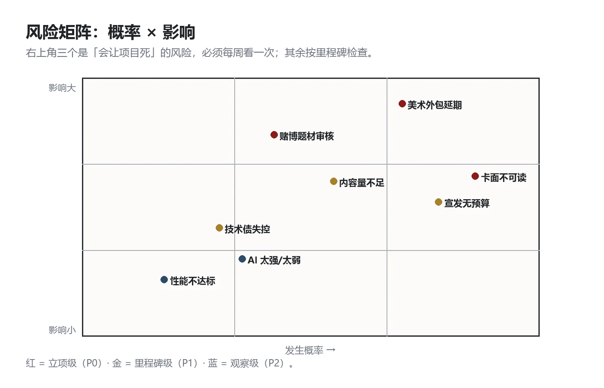
点击放大 ↗11.2三个会杀死项目的风险
风险一：美术外包延期（高概率 × 高影响）
24 张卡面 + 6 个对手模型是全项目唯一的“外部依赖”。任何一次延期都会连锁推倒 M3、M4、M5。
对策：① M1 就送第一批 3 件做风格确认；② 卡面分两批（先 10 张、后 14 张），保证“哪怕只交付第一批也能发售”；③ 预留 3 周缓冲。
风险二：卡面不可读（已发生 × 中影响）
玩家视角卡面只有 7–34px 高，必须悬停才能读——这直接威胁“桌面即 UI”的核心卖点（5.3）。
对策：① 在 M3 之前定稿“剪影方案”（卡框形状差异）；② 给每张卡一个“远距离可辨的形状”（圆/方/尖/裂）；③ 若都不行，退回“卡牌离手自动立起 0.4s”，用节奏换可读性。
风险三：赌博题材的传播限制（中概率 × 中影响）
部分平台/主播对赌博题材有限制，可能影响首周传播。
对策：① 全流程去真实货币化（筹码、命运、赌局）；② 备一套“非赌博向”的宣发素材（聚焦“心理博弈/俄式轮盘”）；③ 分级标注清晰（12+/16+），不碰成人内容。
11.3技术债清单（何时还、何时不还）
| 技术债 | 影响 | 什么时候还 |
|---|---|---|
| 导演层单文件约 5800 行 | 改动风险高、审查困难 | 发售前不重构；1.0 后拆成“装填/出牌/开枪/结算”四个 controller |
| 两套相机常量（EYE_* 与 CAM_*）不一致 | 演出时序难以追踪 | 一次专项审计，统一收到 GameConfig.cinematic |
| 导演层有 7 个硬编码时长 | 违反“数值只在配置” | 低风险，随手迁移，不排期 |
| 卡面过曝的历史修复分散在三处材质 | 新人接手易踩坑 | 写进 8.3 规格书即可，不重构 |
| 3D 音源用常量坐标而非 Marker3D | 换场景要改代码 | 若做第二张赌桌时必须还 |
11.4如果只有 60% 的资源：砍功能的顺序
第一批砍（不影响核心体验）
└─ 原声包 / 支持者包 / 第三张赌桌主题
第二批砍（削弱但可接受）
└─ 每日挑战 / 无尽模式排行榜 / 成就系统
第三批砍（伤筋动骨，但能保发售）
└─ 对手从 3 个减到 2 个 / 卡池从 24 张减到 18 张
绝不砍
└─ 空弹连锁 / 加码系统 / 打击感三件套 / 可读性兜底
判断依据只有一条：玩家会不会在 30 秒内看到它。看不到的都可以砍。
11.5止损线（写在立项时就该写的那句话）
| 阶段 | 观察指标 | 未达标怎么办 |
|---|---|---|
| M2 结束 | 单局可玩完、无阻断 bug | 推迟 M3，先修稳定性 |
| M4 结束 | 愿望单 < 2,000 | 改为小规模上线（itch + Steam 低调发行），不追加投入 |
| M4 结束 | Demo 平均时长 < 4 分钟 | 说明“没教会/没吸引力”，重做前 10 分钟 |
| 发售 2 周 | 好评率 < 80% | 停下内容更新，先做“高优先级差评”修复 |
| 发售 1 月 | 销量 < 1,000 | 结项，把资产转成下一款的原型 |
SECTION 12完成度定义（DoD）：32 条可验收标准
这份策划案的终点是“做到下面这个程度”。每一条都必须能用一条命令、一张截图或一次自对弈验证——不能验收的条目等于没写。
12.1A 组 · 可玩性（8 条）
| # | 标准 | 验收方式 |
|---|---|---|
| A1 | 从标题页到结算面板，一整局无阻断、无死锁 | 手动 10 局 × 全流程 |
| A2 | 单回合耗时 25–30 秒（含玩家思考） | 录像 5 局计时 |
| A3 | 10 张卡全部可用，基础与强化两种状态都触发 | 探针覆盖 10×2 |
| A4 | 胜利后可“结束游戏”或“继续加码”，加码继承底注/倍率/轮数/强化 | 2 局对照 |
| A5 | AI 仅用公开信息，禁止读取当前弹序等私有字段 | 断言 + 代码审查 |
| A6 | 300 局自对弈 0 非法动作、0 越界血量 | 自对弈脚本 |
| A7 | 键鼠可完成整局（含设置、暂停、退出） | 手动 1 局 |
| A8 | 手柄可完成 UI 导航（对局内三选一允许鼠标优先） | 手柄 1 局，记录缺口 |
12.2B 组 · 表现与演出（6 条）
| # | 标准 | 验收方式 |
|---|---|---|
| B1 | 零 UI 图标：血量/子弹/卡牌/先手全部为 3D 模型 | 截图人工审查 |
| B2 | 受击三件套：模型抖动 + 屏幕红闪 + 音效，三者同时发生 | 逐帧截图对比 |
| B3 | 低血（HP≤1）有暗角 + 心跳 + 灯偏红 | 探针 3 项 |
| B4 | 卡牌悬停放大，放大后可读卡名 | 探针 401 项 |
| B5 | 音乐三状态（title / duel / final）随血量与轮数切换，无硬切 | 听感 + 事件日志 |
| B6 | 30 条音效全部接线（每条至少触发一次） | 事件日志覆盖表 |
12.3C 组 · 画面质量（4 条）
| # | 标准 | 验收方式 |
|---|---|---|
| C1 | 卡面特写过曝像素占比 <5% | 截图统计 |
| C2 | 单主光源（吊灯）+ 四周暗角 + 环境粒子 | 截图审查 |
| C3 | 4 档分辨率（1280×720 / 1600×900 / 1920×1080 / 2560×1440）+ 全屏 | 逐档截图 |
| C4 | 画质三档（low / medium / high）可切，medium 为验收基线 | 性能探针 |
12.4D 组 · 技术与性能（8 条）
| # | 标准 | 验收方式 |
|---|---|---|
| D1 | 1280×720 下 ≥60 FPS（实际应 ≥145 FPS，留 2.4× 余量） | 5 分钟采样 |
| D2 | 点击“开始”到进入对局 ≤2 秒（含预热） | 3 次取均值 |
| D3 | 卡面纹理压缩后 ≤25 MiB（原 134 MiB） | 显存探针 |
| D4 | headless 启动 0 ERROR、导出 0 ERROR | 启动日志 |
| D5 | 831 条规则断言全绿 | 测试脚本 |
| D6 | 300 局自对弈 0 非法（与 A6 同源，独立跑一次） | 自对弈 |
| D7 | 导出 exe ≤200 MB 且可独立运行整局 | 双击运行 |
| D8 | 连续 10 局后无内存增长异常（<5%）、退出无对象泄漏 | 10 局采样 |
12.5E 组 · 可用性（4 条）
| # | 标准 | 验收方式 |
|---|---|---|
| E1 | 12 项设置全部生效并可持久化（音量 3 路 / 动画速度 / 全屏 / 分辨率 / 画质 / 帧率上限 / vsync / 动态效果 / 文字大小 / 语言占位） | 逐项切换 + 重启 |
| E2 | 暂停面板：继续 / 设置 / 返回标题 / 退出 | 手动 |
| E3 | 无障碍三件套：动态效果三档、文字 100–150%、色弱双通道标识 | 设置后截图 |
| E4 | 首次进入有 3–5 行纯文字引导，无图标 | 首局截图 |
12.6F 组 · 文档与交付（2 条）
| # | 标准 | 验收方式 |
|---|---|---|
| F1 | 三份文档齐备：玩法规则、接口契约、QA 验收清单，且与实现一致 | 逐条对照 |
| F2 | 导出预设可一键复现出厂件（同版本号、同包体大小 ±2 MB） | 重导出对比 |
12.7验收方法总表
| 类型 | 工具 | 谁验 | 通过阈值 |
|---|---|---|---|
| 规则断言 | headless 测试脚本 | 开发 | 100% 通过，0 红灯 |
| 视觉探针 | 截图 + 像素统计 | 开发 | 每项 ≥90% 像素符合预期 |
| 性能 | 帧采样（5 分钟） | 开发 | p5 帧率 ≥ 目标值 |
| 主观体验 | 3 名外部玩家各 1 局 | 策划 | 能独立完成对局，无需口头教学 |
| 打包 | 干净环境双击运行 | 开发 | 全流程无崩溃 |
SECTION 13面试材料包：这份策划案怎么被讲出来
13.110 分钟讲解脚本
这不是“读策划案”，是“带着对方走一遍你的思考”。每段约 2 分钟。
第 1 段（0:00–2:00）：一句话 + 一个画面
“我做了一款第一人称 3D 赌桌卡牌游戏。桌上一把左轮、八颗黑白色的子弹、十张卡。你的血量是四颗心脏，你的子弹是自己选的——但弹序是隐藏的。”
打开实机截图：“整个界面没有一个 UI 图标，所有信息都在桌上。” 让对方先看到画面，再听到机制。
不要做：不要先讲“我在什么公司做过什么”。
第 2 段（2:00–4:00）：核心张力——为什么“打自己”是最优解
讲伤害矩阵的翻转：利好色打对手 −1、打自己 +1；非利好色反之。于是“打自己”既是自杀，也是治疗。
再讲空弹自射的连锁：打自己 + 空弹 → 保留回合 → 补一张卡 → 可以连续行动。
这一段的目标是让对方说一句“等等，打自己反而赚？”
第 3 段（4:00–6:00）：三个设计决策（挑两个讲透）
决策一：为什么放弃“搜打撤 + 箱庭”的大设计，缩到一张赌桌（范围控制）。
决策二：为什么坚持零 UI（并承认卡面 7px 的失败）。
决策三：为什么定 ¥38 而不是 $2.99（商业判断）。
这一段的目标是展示“取舍”，不是展示“功能”。
第 4 段（6:00–8:00）：怎么保证它真的成立
831 条规则断言、300 局自对弈、62 个视觉探针目录、确定性复现、性能预算 2.4× 余量。
这一段的目标是让对方相信“这不是一个 PPT 项目”。
第 5 段（8:00–10:00）：如果继续做，我会做什么
24 张卡、3 个对手（庄家/镜羊/债主，每个改一条规则）、每日挑战、卡面剪影方案。
最后一句：“我最想解决的是可读性——它是我这套哲学唯一站不住的角落。”
13.2十二个高频追问
| # | 可能被问 | 建议回答的骨架 |
|---|---|---|
| 1 | 为什么是 4 点血？ | 4 点 = “四颗心”可数、单发 1 点、两次失误即危险；3 点太脆、5 点以上就数不清了 |
| 2 | 为什么伤害是 ±1 而不是数字成长？ | 保持“每一发都致命”的紧张；数字成长会把心理博弈变成数值碾压 |
| 3 | 强化卡 15%→100% 为什么这么设计？ | 前 6 轮低概率＝保留“运气惊喜”，18 轮后 100%＝后期必然强度通胀，制造终局 |
| 4 | AI 会不会作弊？ | 明确不作弊（只用公开信息），所以玩家输了会怪自己；实测决策 p99 0.19ms |
| 5 | 零 UI 是不是炫技？ | 是取舍：换来“桌上有东西”的沉浸，代价是信息密度，用三层兜底（材质/悬停/日志）补 |
| 6 | 卡面读不出来怎么办？ | 已承认这是缺陷，三个候选解法，倾向剪影方案（不牺牲节奏） |
| 7 | 为什么不做多人？ | 多人把成本从“演出”转向“网络同步”，而演出是护城河；先用每日挑战做留存 |
| 8 | 10 张卡够吗？会不会很快腻？ | 不够，所以 24 张是 1.0 目标；10 张是“最小可验证集”，每类角色 2–3 张 |
| 9 | 这个品类竞争激烈吗？ | 竞品证明需求存在但都偏“短内容”；本作的差异是“可重复玩的系统 + 3D 演出” |
| 10 | 你一个人怎么做出 3D 的？ | 低多边形 + 强光照 + 24 件资产 + 全部演出用代码 Tween；音频全程序合成 |
| 11 | 最大的失败是什么？ | 卡面可读性（7–34px）+ 曾想把游戏做成“搜打撤 + 箱庭”（范围失控） |
| 12 | 如果给你资源，第一件事做什么？ | 招一个美术做卡面剪影 + 24 张卡；然后再谈多人 |
13.3作品集包结构（面试时带什么）
山羊赌局_求职作品集/
├─ 01_策划案.pdf ← 本文档（建议导出 PDF 携带）
├─ 02_实机演示.mp4 ← 60 秒高光 + 3 分钟完整对局
├─ 03_截图/
│ ├─ 对局_开局.png
│ ├─ 对局_低血.png
│ └─ 结算_加码.png
├─ 04_可执行Demo/ ← 一个 exe 或 itch 链接（最重要）
├─ 05_数值与规则速查.pdf ← 附录 A–D 单独抽出
└─ 06_拆解案_恶魔轮盘.pdf ← 第二份文档，证明“能读懂别人的游戏”
13.460 秒演示视频分镜
| 时间 | 画面 | 旁白/字幕 |
|---|---|---|
| 0–5s | 黑屏 → 吊灯亮起 → 白理石赌桌 | “一张桌子，一把左轮，八颗子弹。” |
| 5–15s | 装填：骰子旋转、弹壳落位 | “白骰定白弹，黑骰定黑弹——你只知道数量，不知道顺序。” |
| 15–28s | 抽卡 → 使用 → 拿枪 → 打自己 → 空弹 → 连锁补卡 | “打自己反而可能是最优解。” |
| 28–38s | 强化卡翻面 + 倍率火焰字暴涨 | “第 18 轮起，每张卡都会强化。” |
| 38–48s | 低血：暗角、心跳、红闪 | “四颗心，两颗没了。” |
| 48–60s | 胜利结算 → 加码/结束 | “赢了可以走，也可以继续加注。” |
13.5面试当天的三个提醒
- 先给画面，再给机制，最后给数据。大部分面试官只有 60 秒耐心，顺序错了就听不到数据。
- 主动说缺陷。卡面 7px、单人开发、10 张卡不够——你主动说，是“自知”；被问出来，是“漏洞”。
- 带上可玩的东西。一个能跑 5 分钟的 exe，胜过 50 页 PPT。
附录 A核心数值总表
| 分类 | 键 | 值 | 备注 |
|---|---|---|---|
| 生命 | max_hp | 4 | 血量上限，clamp[0,4] |
| 生命 | hp_min | 0 | 归零判负 |
| 弹巢 | cylinder_size | 8 | 8 槽 |
| 弹巢 | blank_damage | 0 | 空弹无伤害 |
| 弹巢 | shell_order_hidden | true | 弹序对双方不可见 |
| 弹巢 | reveal_total_only | true | 只公开总数 |
| 骰子 | faces | 6 | 每颗骰子 6 面 |
| 骰子 | values | [2,3,4] | 每个值占 2 面 |
| 骰子 | white_shells / black_shells | 白骰/黑骰 | 实弹 = 白 + 黑，空弹补足 8 |
| 卡牌 | deck_size | 8 | 牌区固定 8 张 |
| 卡牌 | draw_per_turn | 1 | 每回合抽 1 |
| 卡牌 | store_slots | 1 | 存放上限 1 |
| 卡牌 | store_swap_chance | 0.20 | 轮首转盘红区概率 |
| 强化 | 概率曲线 | min(1, 0.15 + 0.05×(r−1)) | 第 1 轮 15%，第 18 轮 100% |
| 强化 | 张数 | clamp(1 + max(0, r−18), 1, 8) | 第 19 轮 2 张，第 25 轮 8 张 |
| 连锁 | TURN_CHAIN_LIMIT | 8 | 空弹自射连续行动上限 |
| 兑换 | MAX_CHAIN | 12 | 存放互换链上限 |
| 经济 | ante | 80–120 | 每局随机 |
| 经济 | 倍率 | 第 1 轮 ×1，第 r 轮 ceil(prev × f)，f∈[1.5, 2.0]，第 19 轮起 f=1.5 | 不夹取，可为负 |
| 效果 | powered_multiplier / powered_upgraded_multiplier | 2 / 3 | 强力子弹 ×2 / 强化 ×3 |
| 效果 | mount_stackable | false | 同名挂载不叠加 |
| 效果 | trigger_reverse_play_order | true | 挂载倒序触发（后手优先） |
| 动画 | 骰子 / 装填 / 卡牌 | 2.0 / 1.0 / 2.0 s | 均可跳过 |
| 动画 | 转盘 / 硬币 / 抽卡 | 2.0 / 2.0 / 1.0 s | 均可跳过 |
| 动画 | 拿枪 / 瞄准 / 静待 / 放回 | 2.0 / 2.0 / 2.0 / 2.0 s | 不可全跳 |
| 动画 | 快速档 | ×0.5 | 设置项 |
| 相机 | 后坐 / pitch / FOV / 时长 | +0.03m / +2° / 70→68 / 0.28s | 开枪 |
| 相机 | 击杀推近 / 慢镜 | 0.06m + FOV −3° / 0.25× × 0.12s | 击杀 |
| 相机 | hit-stop | 0.05× × 0.05s | 受击 |
| 特效 | 屏震 / 红闪 / 抖动 / 枪口 | 0.055·0.22s / 0.30s / 0.05·0.25s / energy 6.0 | 三件套 |
| 特效 | 低血阈值 / 暗角呼吸 | HP≤1 / 0.34↔0.55 · 0.9s | 情绪化 |
| 性能 | 显存预算 / 卡面纹理 | <500 MiB / 22.4 MiB | 压缩后 |
附录 B十张卡全表
| id | 名称 | 类型 | 基础效果 | 强化效果 |
|---|---|---|---|---|
| moli | 魔力透镜 | 即时·信息 | 查看下一发是实弹还是空弹 | 查看并高亮剩余同色弹 |
| qiangli | 强力子弹 | 即时·火力 | 下一发伤害 ×2 | 下一发伤害 ×3 |
| heibai | 黑白镜像 | 即时·信息 | 剩余弹逐发反色（1 次） | 对手利好色剩余弹全部变为我方利好色 |
| zhiyu | 治愈蔷薇 | 挂载·续航 | 每轮结束 +1 血 | 每轮结束 +2 血 |
| shixue | 嗜血玫瑰 | 挂载·火力 | 每轮结束对对手 −1 血 | 每轮结束 −2 血 |
| xingyun | 幸运骰子 | 延时·节奏 | 3 发 60% / 4 发 40% | 必定 4 发 |
| mingyun | 命运硬币 | 延时·节奏 | 抢回先手（本轮） | 抢回先手，且对手下轮仍后手 |
| jinghua | 净化领域 | 即时·续航 | 清空全场挂载 | 清自己负挂载 + 对手正挂载 |
| shenzhi | 神之一手 | 即时·信息 | 重排 1 发弹序 | 重排全部剩余弹序 |
| mogui | 魔鬼锁链 | 延时·节奏 | 锁住对手 1 回合拿枪 | 锁 2 回合 |
四条挂载规则：① 同名不叠加；② 强化覆盖基础，基础不覆盖强化；③ 按打出顺序倒序触发（后手优先）；④ 持续型在每轮末触发一次，延时型触发后消失。
附录 C伤害矩阵（8 种组合）
| 射手 | 目标 | 子弹颜色 | 伤害 | 玩家体会 |
|---|---|---|---|---|
| 我方 | 对手 | 利好（白） | −1 | “打中了” |
| 我方 | 对手 | 非利好（黑） | +1 | “打反了，给对手回血” |
| 我方 | 自己 | 利好（白） | +1 | “用命换血” |
| 我方 | 自己 | 非利好（黑） | −1 | “自杀式操作” |
| 黑羊 | 我方 | 利好（黑） | −1 | “挨了一下” |
| 黑羊 | 我方 | 非利好（白） | +1 | “对手打反了” |
| 黑羊 | 自己 | 利好（黑） | +1 | “对手在回血” |
| 黑羊 | 自己 | 非利好（白） | −1 | “对手在自杀” |
| 任意 | 任意 | 空弹 | 0 | 无效果（但触发连锁/换手） |
三条例外：① 强力子弹 ×2（强化 ×3），但 0 伤害仍是 0；② 所有结果 clamp 到 [0, 4]；③ 射击倍率修正只在“玩家 → 黑羊”时用白弹伤害 ceil(×1.5)、黑弹回血 max(1, floor(×0.6))，只影响结算数值与 HUD。
附录 DAI 权重（节选 16 条）
| 权重 | 值 | 作用 |
|---|---|---|
| race_exponent | 1.0 | 用血量比估计对射胜率：胜率 ≈ h/(h+f) |
| tempo_first | 16.0 | 对“先手”的估值 |
| mount_per_round | 22.0 | 每张挂载卡的期望收益 |
| dice_bonus | 22.0 | 幸运骰子的估值 |
| lock_value | 18.0 | 锁链的估值 |
| reveal_base / reveal_scale | 6.0 / 14.0 | 信息类卡的基础价值与按剩余弹量缩放 |
| eject_info / eject_cost | 1.2 / 0.5 | 弃弹的信息收益与代价 |
| store_future_scale | 0.45 | 存放卡未来价值贴现 |
| store_swap_cost | 4.0 | 存放被转盘换走的风险成本 |
| store_delay_cost | 18.0 | 延后一回合的代价 |
| use_threshold / store_threshold | 0.5 / 1.0 | 使用/存放的决策阈值 |
| ev_margin | 2.0 | 期望值优势超过 2.0 才偏离规则骨架 |
| kill_priority | 1.0 | 斩杀优先（对手 ≤1 血） |
| chain_blank_rule | 0.45 | 空弹概率 ≥0.45 才考虑连锁 |
| chain_card_value / chain_risk | 7.0 / 1.2 | 连锁的卡收益与风险 |
AI 的六步骨架（先规则、后 EV）：
- 自己 ≤1 血 → 打对方（不能自残）
2. p(利好) ≥ 0.50 → 打对方
3. 对手 ≤1 血且 p ≥ 0.35 → 斩杀
4. 连锁条件成立 → 打自己（赚卡）
5. 自己未满血且 p ≥ 0.35 → 打自己（回血）
6. 否则 → 弃弹/存放（EV 最优）
附录 E音频技术参数
| 音效格式 | AudioStreamWAV，22050 Hz / 16 bit / 单声道 |
| 合成音抖动 | 音高 ±5%、音量 ±5%（录音不抖动） |
| 总线 | Master = Limiter（ceiling −1 dB）；BGM = LowPass 11 kHz；SFX = Compressor（−16 dB / 3:1） |
| 音乐层 | title 36s −14 dB / duel 29.09s −13 dB / final 19.2s −12 dB / ambience 20s / tension 12s（−60→−17 dB） |
| 切换 | 双播放器 crossfade 1.0–1.5s；尾部 0.3–0.4s 等功率回接 |
| 首声 | 主线程同步合成前奏 6.75s（168–202 ms），后台合成其余 5 层（约 2.47s） |
| 音量映射 | linear_to_db()，0.25 → −12.04 dB |
附录 F术语表
| 术语 | 含义 |
|---|---|
| 轮（round） | 一次装填到实弹全部打完/弃完 |
| 回合（turn） | 抛硬币 → 双方各行动一次；一轮通常 4 个回合 |
| 实弹 / 空弹 | live / blank；实弹 = 白弹 + 黑弹 |
| 利好色 | 射手的阵营色；我方为白，对手为黑 |
| 挂载 | 打出后持续/延时生效的卡 |
| 强化 | 部分卡打出时自动升级的效果 |
| 连锁 | 打自己 + 空弹，保留回合并补一张奖励卡 |
| 存放 | 把一张卡留到下一轮 |
| 底注 / 倍率 | 结算的基础金额与逐轮成长系数 |
| 加码 | 胜利后不结算、直接下一轮并继承倍率 |
| 转盘 | 轮首 20% 触发存放交换的随机装置 |
| 先手 | 本回合先拿枪的一方（硬币决定） |
| 确定性 | 同一随机种子必然复现同一局 |
| 探针 | 用场景脚本截图并统计像素的自动化测试 |
附录 G参考资料
竞品与市场
- Buckshot Roulette Steam 商店页：https://store.steampowered.com/app/2835570/Buckshot_Roulette/
- Balatro（累计销量与定价）：https://en.wikipedia.org/wiki/Balatro
- Inscryption：https://en.wikipedia.org/wiki/Inscryption
- Liar's Bar（SteamDB 数据）：https://steamdb.info/app/3097560/charts/
- 《苏丹的游戏》首月销量报道：http://www.nadianshi.com/2025/04/387389
- Next Fest 愿望单转化：https://howtomarketingame.com/2025/08/26/the-demo-effect-from-7000-wishlists-to-42000/
- Godot 官方展示（Buckshot Roulette 案例）：https://godotengine.org/article/godot-showcase-buckshot-roulette/
设计与工程（本策划案的方法论来源）
- Godot 4 官方文档（音频合成、导出、性能）
- 《The Art of Game Design》（Schell）——体验分层
- 《Rules of Play》——规则与游玩的关系
- Steamworks 文档（成就、云存档、愿望单）
附录 H文档版本与修订
| 版本 | 日期 | 变更 | 页数（约） |
|---|---|---|---|
| v2.0 | 2026-10-31 | 求职作品集版：重写为前向设计文档，12 张图表、9 篇决策日志、3 段叙事、32 条 DoD、面试材料包 | — |
| v1.0 | 2026-10-31 | 现状审计版（商业立项 + 完整设计 + 现状审计 + 发行计划四合一） | 52 |
本文档的自检规则：任何一条数值，都必须能在附录 A–D 找到，或能由第 3 章的公式推导出来；任何一条设计主张，都必须配一条可执行的验收方式。做不到这两条的内容，下个版本删掉。
— 全文完 —